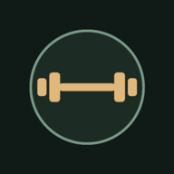

SUA SEQUÊNCIA A → B → C

SILO / TRAINING SYSTEM
Meu treino.
Seu próximo movimento.
BIBLIOTECA
8 fichasEscolha sua sessão
Como alternar as fichas
Escolha A ou A2, B ou B2, C ou C2 no lugar da sessão correspondente. Mantenha uma opção por algumas semanas para comparar sua evolução. D e E são alternativas para reorganizar uma semana; não são sessões extras obrigatórias.
Respeite a recuperação dos mesmos músculos e sua orientação individual. As novas fichas são sugestões para validar com seu profissional, considerando a cirurgia e a discopatia lombar.
Aqueça 5–8 min e faça séries leves do primeiro exercício. Pare se sentir dor, formigamento ou tontura. Máquinas apoiadas também precisam de ajuste de carga e amplitude.
ÊNFASE DA SESSÃO
Preparação e orientação
- Aquecimento
- Cardio
- Como usar
Exercícios
Toque para expandirSEUS REGISTROS
Evolução
Sessões finalizadas
DO SEU JEITO
V14Ajustes
Aparência
Escolha a iluminação do seu painel.
Backup em arquivo
Salve uma cópia das cargas, séries e sessões. Você pode restaurar neste aparelho ou em outro.
Google Drive
Backup na área privada do app, usando sua conta Google.
Configurar conexão
Autorize a origem do site no cliente Web e ative a API do Drive.
Dados do aparelho
Seus registros são salvos enquanto você digita. Faça backup antes de limpar os dados do navegador ou trocar de aparelho.
Aplicativo
Silo V14 · fichas e registros offline
O descanso é corrigido pelo horário real ao voltar. Alertas em segundo plano dependem do Android.